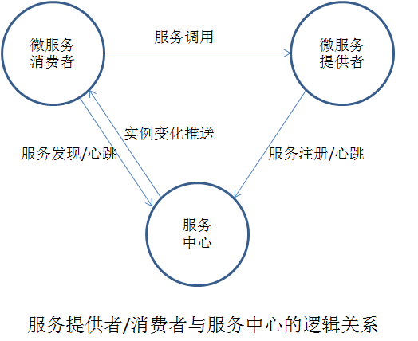

概念阐述
本小节介绍如何在开发者本地进行消费者/提供者应用的开发调试。开发服务提供者请参考3 开发服务提供者章节，开发服务消费者请参考4 开发服务消费者。服务提供者和消费提供者均需要连接到在远程的服务中心，为了本地微服务的开发和调试，本小节介绍了两种搭建本地服务中心的方法进行本地微服务调试：
-
启动本地服务中心
-
通过local file模拟启动服务中心Mock机制
-
通过设置环境信息方便本地调试
服务中心是微服务框架中的重要组件，用于服务元数据以及服务实例元数据的管理和处理注册、发现。服务中心与微服务提供/消费者的逻辑关系下图所示：

启动本地服务中心
-
步骤 1 启动本地服务中心
-
以可执行文件的方式运行
bash
wget http://apache.org/dyn/closer.cgi/incubator/servicecomb/incubator-servicecomb-service-center/1.0.0-m1/apache-servicecomb-incubating-service-center-1.0.0-m1-linux-amd64.tar.gz
tar xvf apache-servicecomb-incubating-service-center-1.0.0-m1-linux-amd64.tar.gz
2. 运行服务注册中心
bash
bash apache-servicecomb-incubating-service-center-1.0.0-m1-linux-amd64/start-service-center.sh
注意：前端（frontend）在Linux环境下默认会绑定ipv6地址，导致浏览器报错，修复办法为：先修改conf/app.conf中的httpaddr为外部可达网卡ip，之后修改app/appList/apiList.js中`ip : 'http://127.0.0.1'`为对应ip，最后重启ServiceCenter即可。
</div>
注意：Window和Linux版本均只支持64位系统。
- 以Docker的方式运行
bash
docker pull servicecomb/service-center
docker run -d -p 30100:30100 servicecomb/service-center:latest
- 步骤 2 启动本地服务中心后，在服务提供/消费者的microservice.yaml文件中配置ServerCenter的地址和端口，示例代码：
yaml
servicecomb:
service:
registry:
address:
# 服务中心地址及端口
http://127.0.0.1:30100
- 步骤 3 开发服务提供/消费者，启动微服务进行本地测试。
----结束
Mock机制启动服务中心
在本进程内存中模拟一个只能本进程使用的服务中心，一般是在测试场景中使用。 * ### 进程内调用 只需要在启动ServiceComb引擎之前声明一下即可启用：
System.setProperty("local.registry.file", "notExistJustForceLocal");
-
跨进程调用
如果部署比较简单，并且部署信息是静态的，即使有跨进程调用也可以使用本Mock机制 producer端仍然像“进程内调用”一样声明即可 但是，因为Mock并不能跨进程生效，所以consumer端的Mock，需要提供一个本地的配置文件，在里面描述调用目标的详细信息，包括名字、版本、地址、schema id等等信息 同样，因为Mock不能跨进程，consumer也无法动态取得producer的契约信息，所以，需要在本地提供契约文件 （这个场景，使用Mock服务中心，比使用standalone的服务中心，成本高得多得多，不建议使用）
-
步骤 1 新建本地服务中心定义文件，假设名字为registry.yaml，内容示例如下：
yaml
localserv:
- id: "100"
version: "0.0.1"
appid: localservreg
schemaIds:
- hello
instances:
- endpoints:
- rest://localhost:8080
- highway://localhost:7070
* 步骤 2 consumer本地部署契约文件
参考：定义服务契约 * 步骤 3 在consumer main函数，启动ServiceComb引擎之前声明：
System.setProperty("local.registry.file", "/path/registry.yaml");
setProperty第二个参数填写registry.yaml在磁盘中的系统绝对路径，注意区分在不同系统下使用对应的路径分隔符。
通过设置环境信息方便本地调试
java chassis在设计时，严格依赖于契约，所以正常来说契约变了就必须要修改微服务的版本。但是如果当前还是开发模式，那么修改接口是很正常的情况，每次都需要改版本的话，对用户来说非常的不友好，所以增加了一个环境设置。如果微服务配置成开发环境，接口修改了（schema发生了变化），重启就可以注册到服务中心，而不用修改版本号。但是如果有consumer已经调用了重启之前的服务，那么consumer端需要重启才能获取最新的schema。比如A -> B，B接口进行了修改并且重启，那么A这个时候还是使用B老的schema，调用可能会出错，以免出现未知异常，A也需要重启。有三种方式可以设置，推荐使用方法1 * 方法1：通过JVM启动参数-Dservice_description.environment=development进行设置
- 方法2：通过microservice.yaml配置文件来指定
yaml
service_description:
environment: development
- 方法3：通过环境变量来指定（仅限于Windows系统），比如在Eclipse下面进行如下设置